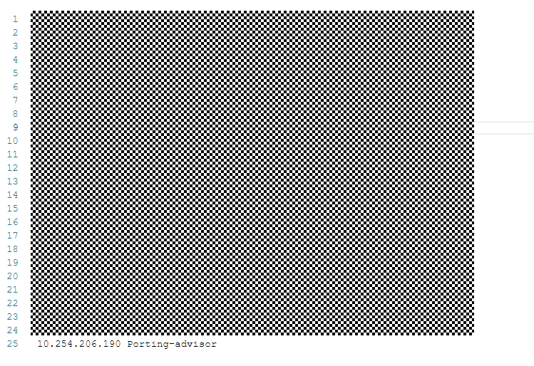

If a security alert is displayed when you use a browser to log in to the Kunpeng Porting Advisor, you can import a root certificate for the tool to shield the security alert.
The following uses Chrome 72.0 as an example to describe how to import a root certificate for the Kunpeng Porting Advisor.
- Log in to the Kunpeng Porting Advisor WebUI, click
 in the upper right corner, choose Web Server Certificate, and click Download Root Certificate.
in the upper right corner, choose Web Server Certificate, and click Download Root Certificate. - Open the browser and choose Settings > Privacy and security > Security > Manage certificates.
- In the Certificates dialog box displayed, select the Trusted Root Certification Authorities tab and click Import, as shown in Figure 1.
- In the Certificate Import Wizard dialog box displayed, click Next, as shown in Figure 2.
- In the File to Import dialog box displayed, click Browse, as shown in Figure 3.
- Select the certificate to be imported and click Next.
- Click Next.
In the Certificate Store dialog box displayed, set the certificate store as shown in Figure 4, and click Next.
- Click Finish.
The Security Warning dialog box is displayed.
- Click Yes.
"The import was successful" is displayed.
- Click OK.
- Modify the mapping between the server IP address and the tool in the local hosts file.
- Open the hosts file in C:\Windows\System32\drivers\etc.Figure 5 hosts file
 - Add the following content in the hosts file, save the changes, and exit.
Server IP address Porting-advisor
Example: 10.254.206.190 Porting-advisor
- Open the hosts file in C:\Windows\System32\drivers\etc.
- Open the browser, enter https://porting-advisor:port number (for example: https:/porting-advisor:8084) in the address box, and click Enter.